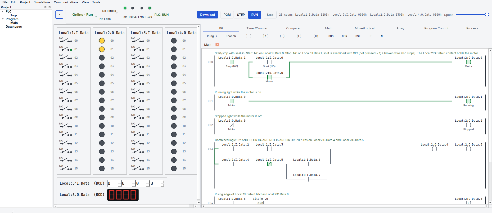
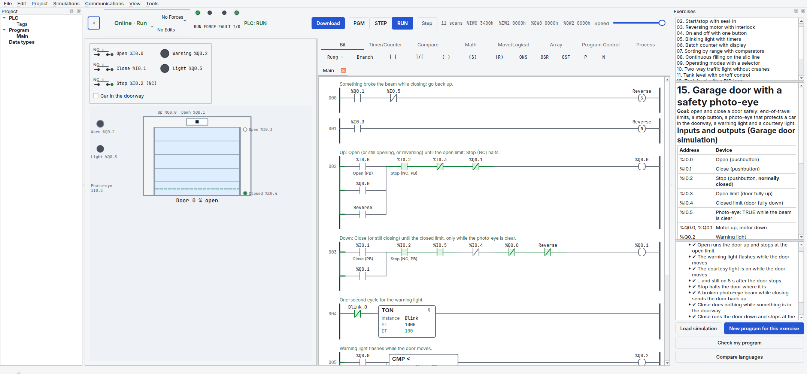
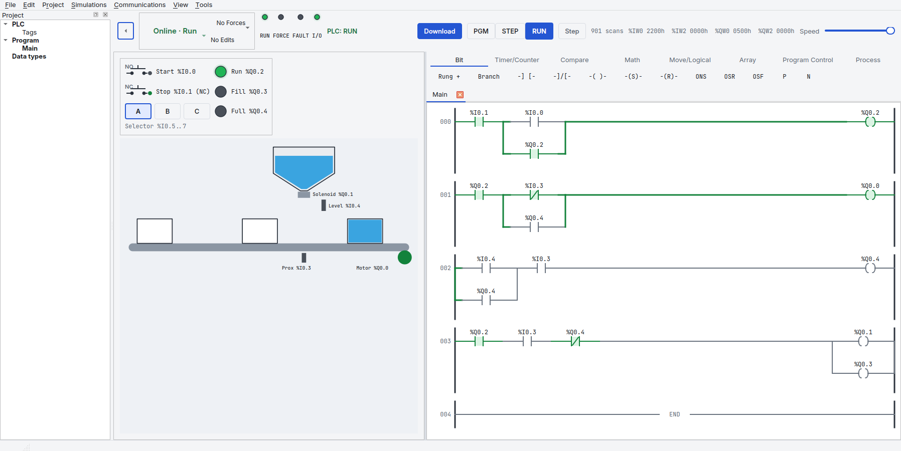
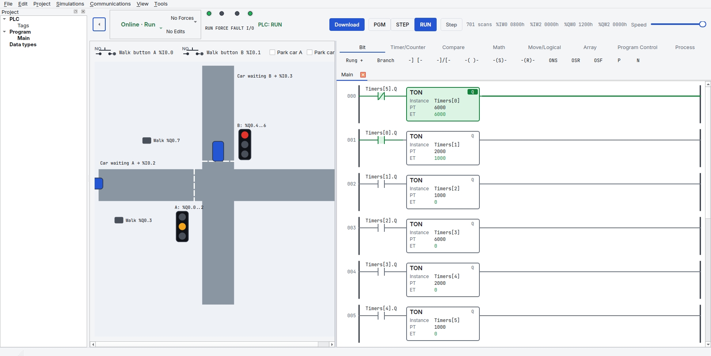
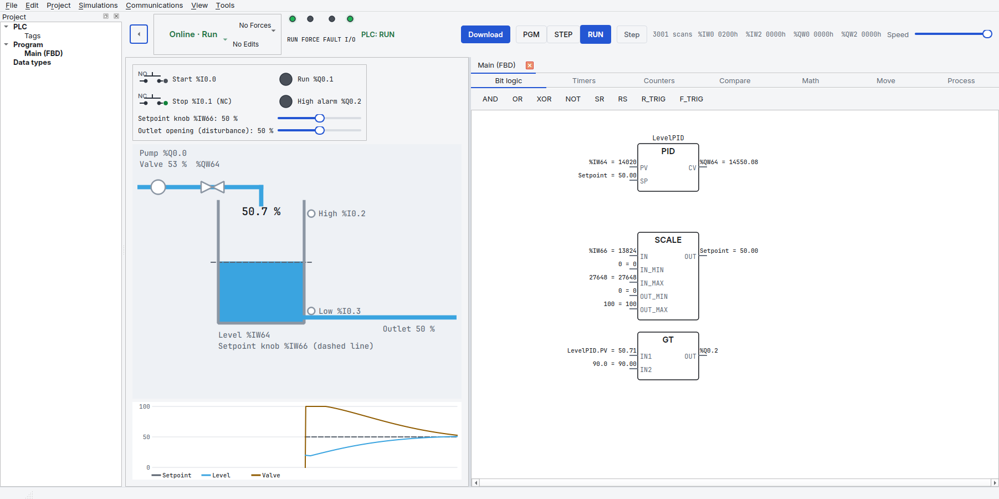
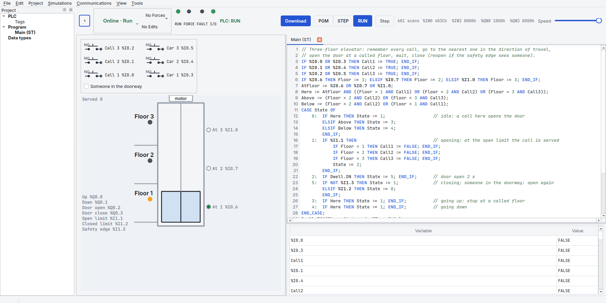
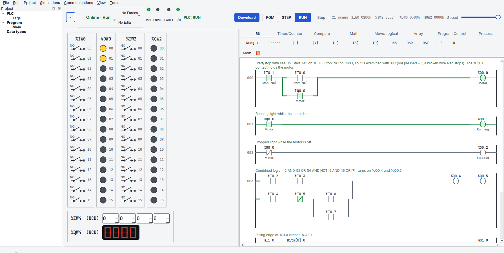

Download¶
PLCYard is free and open source (GPL-3.0-or-later). It runs on Linux, macOS and Windows with Python 3.11 or newer.

Install¶
Linux and macOS
git clone https://github.com/juliordzcer/plcyard.git
cd plcyard
python3 -m venv .venv
.venv/bin/pip install -e .
.venv/bin/plcyard
Windows (PowerShell, with Python and Git installed)
git clone https://github.com/juliordzcer/plcyard.git
cd plcyard
py -m venv .venv
.venv\Scripts\pip install -e .
.venv\Scripts\plcyard
No Git? Download the source as a zip,
unzip it and run the same commands from the plcyard-main folder.
Update¶
From the plcyard folder: git pull, then start it again.
Screenshots¶
 |
 |
 |
 |
 |
 |
Then read Getting started.